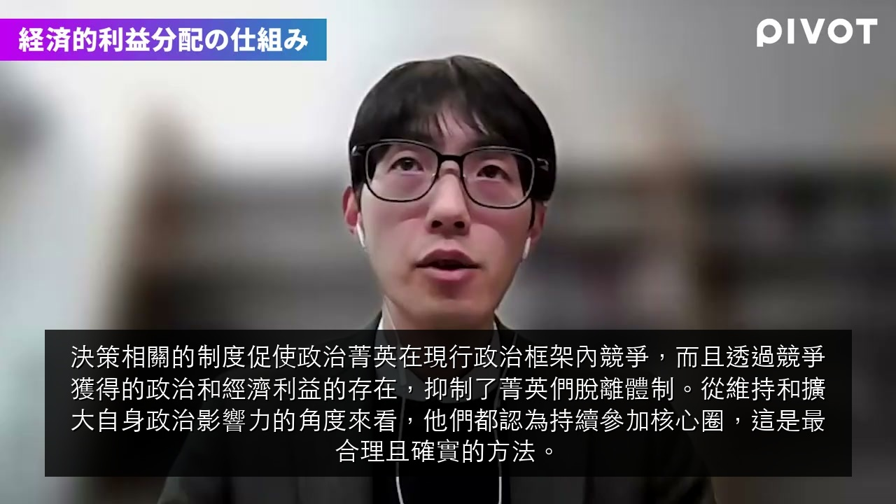
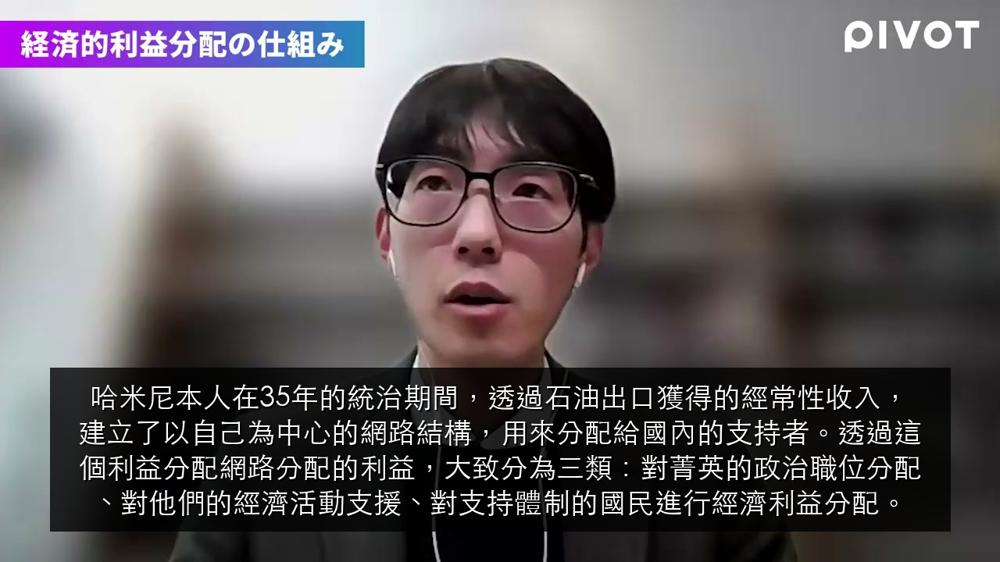
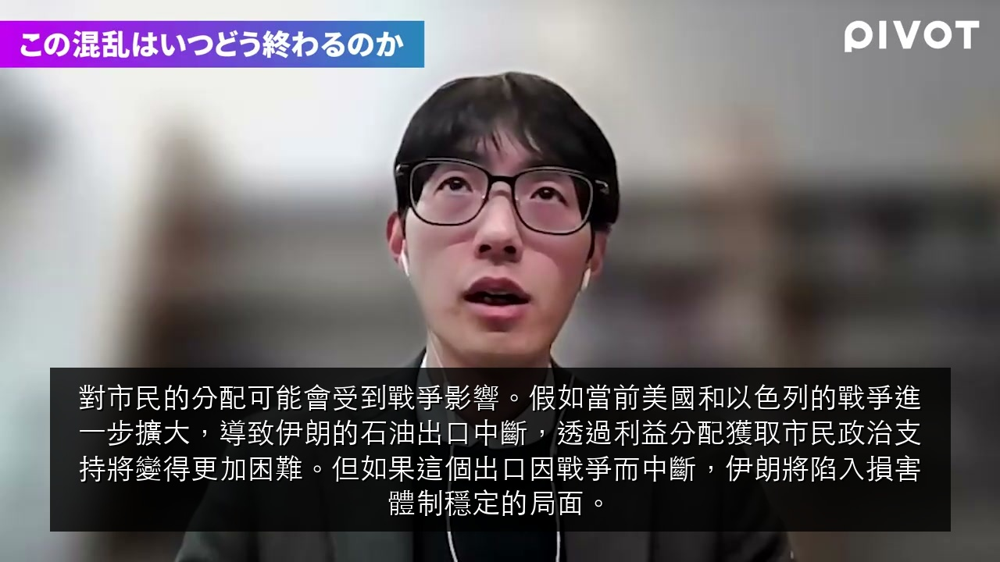

⏱ 00:02:30
伊朗體制能維持穩定的理由，大致可分為三點。第一，已經建立了防止因最高領袖缺席而產生政治真空的制度設計。這樣的憲法統治制度，原本就是為了防止因最高領袖突然缺席而產生政治真空而建立的。

⏱ 00:05:15
實際上，在革命後超過40年的時間裡，伊朗體制並非個人獨裁式的一人統治，而是以最高領袖為核心，建立了階層式的分散型統治系統。雖然最高領導者對內政、外交、安全保障等所有事項擁有最終決策權，但在具體政策決定的擬定上，採取由下而上的方式。

⏱ 00:08:20
決策相關的制度促使政治菁英在現行政治框架內競爭，而且透過競爭獲得的政治和經濟利益的存在，抑制了菁英們脫離體制。從維持和擴大自身政治影響力的角度來看，他們都認為持續參加核心圈，這是最合理且確實的方法。

⏱ 00:10:00
哈米尼本人在35年的統治期間，透過石油出口獲得的經常性收入，建立了以自己為中心的網路結構，用來分配給國內的支持者。透過這個利益分配網路分配的利益，大致分為三類：對菁英的政治職位分配、對他們的經濟活動支援、對支持體制的國民進行經濟利益分配。

⏱ 00:12:40
市民成為巴斯基民兵組織的成員後，可以在超市和博物館獲得折扣，可以獲得優惠的結婚資金和住宅貸款，還有免費的醫療服務和學習支援等。這些經濟利益都以法律形式規定，特別是在經濟發展較落後的農村地區或都市貧民之間，成為市民支持體制再生和維持的經濟誘因。

⏱ 00:14:50
對市民的分配可能會受到戰爭影響。假如當前美國和以色列的戰爭進一步擴大，導致伊朗的石油出口中斷，透過利益分配獲取市民政治支持將變得更加困難。但如果這個出口因戰爭而中斷，伊朗將陷入損害體制穩定的局面。

⏱ 00:18:50
川普總統本人並不一定將伊朗體制崩潰定位為這場戰爭的勝利條件。川普總統本人似乎理解僅靠空襲無法讓體制崩潰，只專注於排除伊朗的軍事威脅，也就是解除核飛彈開發能力這一點，從目前來看，似乎並沒有持續追求體制崩潰。

⏱ 00:21:15
實際上在去年稱為12天戰爭的上一次伊朗與美國、以色列之間的衝突中，市民對美國和以色列攻擊的反感和恐懼高漲。因此，在這次衝突中，美國和以色列的攻擊本身可能作為市民起義的抑制力量在發揮作用。而且，伊朗治安當局依然維持著非常頑強的體制，至今仍對市民進行嚴格的鎮壓監視。

⏱ 00:23:45
阿聯和卡達等國發表說他們以非常高的精度成功擊落來自伊朗的飛彈和無人機，但據說經濟成本非常高。用防空飛彈擊落便宜的伊朗無人機的狀況，據說被批評為像用法拉利摧毀腳踏車一樣。這些國家應該會以經濟和軍事壓力為由，持續對美國施加停戰壓力。